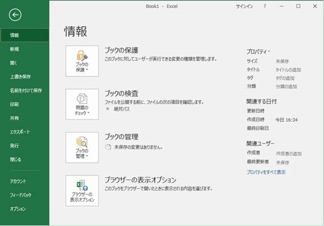
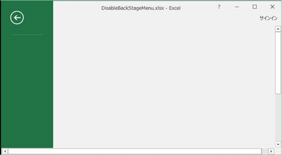
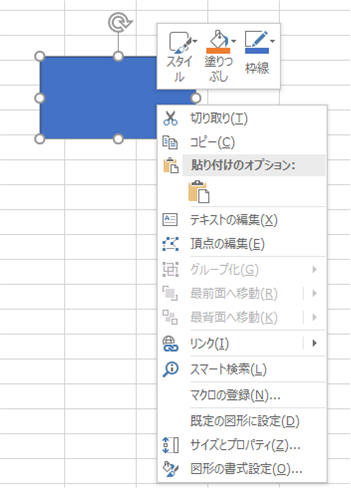
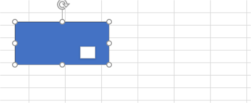
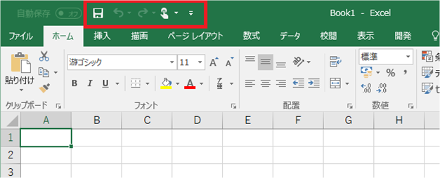
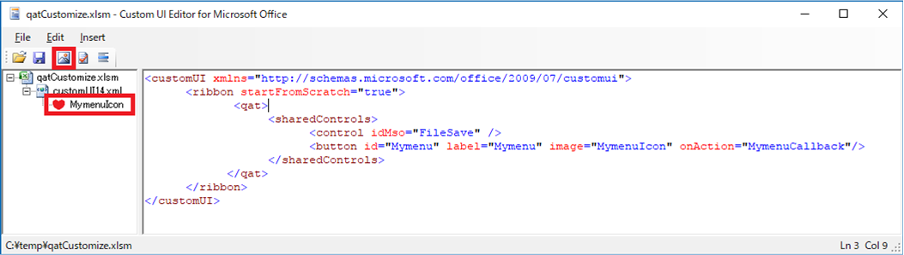
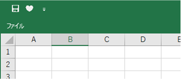

(※ 2017 年 12 月 26 日に Japan Office Developer Support Blog に公開した情報のアーカイブです。)
こんにちは、Office 開発サポートの中村です。
これまで 6 回にわたってリボン カスタマイズについて記事を公開してきましたが、今回でいったん最後の記事の予定です。最後に、特殊なメニューである BackStage ビュー / 右クリックで表示されるコンテキスト メニュー / クイック アクセス ツール バーのカスタマイズ方法をご紹介します。
目次
1. BackStage ビューのカスタマイズ
2. 右クリック メニューのカスタマイズ
3. クイック アクセス ツールバーのカスタマイズ
1. BackStage ビューのカスタマイズ
BackStage ビューは、Office 2010 から導入された [ファイル] タブ内のメニューを指します。Excel 2016 の場合、以下のような画面です。

図 1. Backstage ビュー
Office 2010 の名前空間 http://schemas.microsoft.com/office/2009/07/customui では、この BackStage ビューをカスタマイズする方法も用意されています。言い換えますと、XML でのカスタマイズのみとなりますので、VSTO でビジュアルなデザイナーから BackStage ビューをカスタマイズすることはできません。
また、通常のリボンは、VBA の Comanndbars を用いてカスタマイズすることもできますが、BackStage ビューは VBA ではカスタマイズできません。(なお、Office 2007 以降のリボン メニューでは、この VBA による方法でのカスタマイズは推奨していません)
リボン XML を使用すると、例えば、以下のような BackStage メニューのカスタマイズができます。
- 既存メニューを非表示にする
- 左側のメニューに独自メニューを追加する
- メニュー内の項目に独自のメニューを追加する
これらを応用すると、既存メニューを非表示にして同じ名前でカスタマイズ メニューを追加して、見た目上は既定のメニューで独自の動作をさせることもできます。例えば、[名前を付けて保存] をクリックすると、特定のファイル形式でのみ保存できるダイアログが表示される、といった動作を実現でき、オートメーションなどでユーザーの操作を制限したい場合に活用できます。
参考資料
タイトル : Office UI のカスタマイズ - Backstage ビュー
アドレス : https://msdn.microsoft.com/ja-jp/library/bf08984t.aspx#Backstage
タイトル : Office 2010 の Backstage ビューについて (開発者向け)
アドレス : https://msdn.microsoft.com/ja-jp/library/office/ee691833(v=office.14).aspx
タイトル : Office 2010 の Backstage ビューのカスタマイズ (開発者向け)
アドレス : https://msdn.microsoft.com/ja-jp/library/ee815851(office.14).aspx
タイトル : Office 2010 Backstage ビューでカスタム コマンドを追加し、コントロールの形式を変更する
アドレス : https://msdn.microsoft.com/ja-jp/library/office/ff634163(v=office.14).aspx
タイトル : アドインを作成して Office 2010 の Backstage ビューをカスタマイズする
アドレス : https://msdn.microsoft.com/ja-jp/library/office/ff936212(v=office.14).aspx
タイトル : Office 2010 Backstage ビューのグループとコントロールの表示を動的に変更する
アドレス : https://msdn.microsoft.com/ja-jp/library/office/ff645396(v=office.14).aspx
タイトル : 3.3 Backstage
アドレス : https://msdn.microsoft.com/en-us/library/dd947358(v=office.12).aspx
カスタマイズの例
今回は、2 つのカスタマイズ例をご紹介します。
例 1 : 既存メニューを無効化する
例えば Excel をビューアのように使い、ユーザーに可能な限りブックに対する操作をさせたくない場合などに、リボン メニューを消したいという要望を頂くことがあります。
以前の投稿で、startFromScratch を利用して [ファイル] タブ以外のタブを非表示にできることをご紹介しましたが、startFromScratch だけでは [ファイル] タブの操作を抑止できませんでした。このような場合に、BackStage ビューのカスタマイズを合わせて行うことが検討できます。
BackStage ビューのカスタマイズには、<BackStage> 要素を使用します。例として、Excel 2016 の既定のメニューをすべて非表示にする場合、以下のように XML を記述します。
ここでは、startFromScratch も合わせて設定しています。また、Excel のバージョンや更新適用状況次第でメニュー名は異なりますので、対象環境のバージョンでのメニューと対応するコントロール名は、パート 5 で紹介したコントロール一覧などからご確認ください ([Tab Set] 列が None (Backstage View) の箇所) 。
1 | <customUI xmlns="http://schemas.microsoft.com/office/2009/07/customui"> |
この XML を組み込むと、BackStage ビューは以下のようになります。

図 2. BackStage ビューのメニュー無効化後
例 2 : BackStage ビューの遷移を捕捉する
BackStage ビューが表示されたら、または BackStage ビューからブックに戻ったら xx したい、という場合には、onShow / onHide を使うと、これらのタイミングで指定した関数を実行することができます。先述の公開情報の中でも紹介されています。
タイトル : Office 2010 の Backstage ビューについて (開発者向け)
アドレス : https://msdn.microsoft.com/ja-jp/library/office/ee691833(v=office.14).aspx
該当箇所 : Backstage ビューのコントロールの説明、属性、および子情報
では、実装例です。リボン XML を以下のように記述します。
1 | <customUI xmlns="http://schemas.microsoft.com/office/2009/07/customui"> |
また、対象ブックの VBA に以下を記述しておきます。
1 | Sub onShowMethod(contextObject As Object) |
このように実装すると、[ファイル] タブをクリックして BackStage メニューを表示したときに onShowMethod が、BackStage メニュー上部の左矢印をクリックしてブックに戻ったときに onHideMethod が実行され、この例の場合はメッセージボックスが表示されます。
2. 右クリック メニューのカスタマイズ
右クリック メニューは、正式にはコンテキスト メニューと呼びます。このコンテキスト メニューも、リボン XML の Office 2010 の名前空間ではカスタマイズすることができます。独自メニューの追加、既存メニューの無効化などができます。
補足
Office 2007 の名前空間ではコンテキスト メニューのカスタマイズ方法は用意されていません。Office 2007の場合は、従来通り CommandBars を用いて VBA でカスタマイズします。また、既存メニューの無効化の場合は、リボン メニューの無効化を XML で行うことで、連動してコンテキスト メニューも無効化されます。ただし、CommandBars は、図形 メニューのように一部のメニューは対応していません。(なお、Office 2007 の製品サポートはすでに終了しています。)
参考資料
タイトル : すべてのバージョンの Microsoft Excel でコンテキスト メニューをカスタマイズする
アドレス : http://msdn.microsoft.com/ja-jp/library/gg469862.aspx
タイトル : Office 2010 のコンテキスト メニューのカスタマイズ
アドレス : https://msdn.microsoft.com/ja-jp/library/office/ee691832(v=office.14).aspx
タイトル : 3.2 Context Menu
アドレス : https://msdn.microsoft.com/en-us/library/dd926324(v=office.12).aspx
コンテキスト メニューのカスタマイズは、
例 : 図形の右クリック メニューを無効化する
右クリックする対象によってコンテキスト メニューの内容は異なりますが、今回は図形を右クリックした場合のコンテキスト メニューを例にします。またバージョンごとにメニュー構成は異なりますが、Excel 2016 のあるバージョンでは、以下のメニューが表示されます。

図 3. 図形の右クリック コンテキスト メニュー
以下の XML を既述すると、このコンテキスト メニュー (下側のウィンドウ) を全て表示しないようにできます。
1 | <customUI xmlns="http://schemas.microsoft.com/office/2009/07/customui"> |
また、上部に表示されている「ミニ ツール バー」 (スタイル、塗りつぶし、枠線 のメニュー) は、以下のプロパティかレジストリで制御できます。
<プロパティ>
タイトル : Application.ShowMenuFloaties プロパティ (Excel)
アドレス : https://msdn.microsoft.com/ja-jp/VBA/Excel-VBA/articles/application-showmenufloaties-property-excel
注 : このプロパティに False を設定すると、ミニ ツール バーが表示されます。True で非表示になります。ただし、設定後にプロパティを取得すると、反対の値が取得されます。(False を設定した場合は、True が取得されます)。分かりづらい動作で申し訳ありませんが、ご注意ください。
<レジストリ>
キー : HKEY_CURRENT_USER\Software\Microsoft\Office\XX.0\Common\Toolbars\Excel
(XX = Office バージョンを表す数字です。2016 の場合、16 になります。)
名前 : AllowMenuFloaties
種類 : REG_DWORD
値 : 1 = 表示 / 0 = 非表示
※ このレジストリは、右クリックの都度参照されるため動的に変更できます。Application.ShowMenuFloaties プロパティを変更すると、このレジストリにも反映されます。
上述の XML とプロパティを設定すると、図形の右クリック メニューを以下のように全て無効化できます。なお、このようにすべて無効化しても、コンテキスト メニューの枠は非表示にできません。

図 4. 図形の右クリック コンテキスト メニュー無効化
3. クイック アクセス ツールバーのカスタマイズ
Office のメニューには、リボンの他にクイック アクセス ツールバーも用意されています。下の画像の赤枠部分です。

図 5. クイック アクセス ツール バー
このクイック アクセス ツールバーも、<qat> というタグで XML からカスタマイズができます (Office 2007 向けの名前空間でも利用可能)。
ただし、startFromScratch が True の場合にしか利用できません。上記の画像のように通常通りメニューが表示されている状態で、かつクイック アクセス ツール バーもカスタマイズする、ということは、一連の記事で紹介しているリボン カスタマイズ手法ではできません。このような場合は、以下の公開情報で紹介しているように、GUI で編集したクイック アクセス ツール バーの情報を保持する XML ファイルを利用する方法が検討できます。
タイトル : Office 2010 でカスタマイズしたリボンとクイック アクセス ツール バーを展開する
アドレス : https://msdn.microsoft.com/ja-jp/library/office/ee704589(v=office.14).aspx
本記事では、startFromScratchを True にした上で、ここまでと同様の方法でのカスタマイズする例をご紹介します。
参考資料
タイトル : 2.2.32 qat (Quick Access Toolbar)
アドレス : https://msdn.microsoft.com/en-us/library/dd948879(v=office.12).aspx
例 : 組み込みメニューと独自メニューの追加
以下の XML では、[上書き保存] メニュー (FileSave) と、独自に作成したメニュー (Mymenu) をクイック アクセス ツール バーに表示します。ここでは詳しく解説しませんが、Mymenu ボタンをクリックすると実行される処理 (MymenuCallback) は、以前の投稿で解説したようにマクロを用意しておきます。
1 | <customUI xmlns="http://schemas.microsoft.com/office/2009/07/customui"> |
なお今回、アイコン用の画像を image 要素で設定しています。Custom UI Editor の場合、独自に用意した画像を以下の赤枠で囲んだ [Insert Icons] メニューから簡単に追加し、アイコンとして利用できます (今回は、サンプルとして作成したハートの絵柄の png ファイルを指定しました)。追加した画像をツリーで右クリックすると、XML から指定するアイコンの ID を変更できます。

図 6. Custom UI Editor でのアイコン設定
このように記述すると、クイック アクセス ツール バーには以下のように表示されます。

図 7. クイック アクセス ツール バーのカスタマイズ後
今回の投稿は以上です。
リボン カスタマイズについてはまだまだ細かいテクニックなどもありますが、Office 2007 以降のリボン カスタマイズをこれから始める方向けに、基本的な要素、よく使われるカスタマイズなどをご紹介してきました。
Office 2007 リリースから 10 年が経過していますが、Office 開発 サポートをしていて、まだなかなかこのようなカスタマイズ手法があることが浸透していないと感じます。これからリボン カスタマイズを始める方、既存のソリューションの見直しを考えている方などに、一連の記事が少しでもお役に立てば幸いです。また何かご紹介した方が良い情報がありましたら、リボン カスタマイズについての追加記事を投稿するかもしれません。
本情報の内容 (添付文書、リンク先などを含む) は、作成日時点でのものであり、予告なく変更される場合があります。